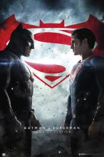

4K
+
ACTORES
AL PACINO (Subtituladas)Archivos: 17
ARNOLD SCHWARZENEGGER (Subtituladas)Archivos: 27
BEN AFFLECK (Subtituladas)Archivos: 23
DWAYNE JOHNSON (La Roca) - (Subtituladas)Archivos: 10
JEAN CLAUDE VAN DAMME (Subtituladas)Archivos: 25
JHONNY DEPP (Subtituladas)Archivos: 30
JOHN TRAVOLTA (Subtituladas)Archivos: 28
KEANU REEVES (Subtituladas)Archivos: 23
KEVIN COSTNER (Subtituladas)Archivos: 24
PATRICK SWAYZE (Subtituladas)Archivos: 15
RICHARD GERE (Subtituladas)Archivos: 21
RYAN REYNOLDS (Subtituladas)Archivos: 19
SILVESTER STALLONE (Subtituladas)Archivos: 27
STEVEN SEAGAL (Subtituladas)Archivos: 14
TOM CRUISE (Subtituladas)Archivos: 18
WESLEY SNIPES (Subtituladas)Archivos: 14
WILL SMITH (Subtituladas)Archivos: 21
OTRAS CLASIFICACIONES
NUEVASArchivos:
- La sociedad de la nieve (2023)
 Millonario sin amor (2021)
Millonario sin amor (2021)-
 Napoleón (2023)
Napoleón (2023)
 Acusado (2023)
Acusado (2023)- Barbie (2023)
- Contrarreloj (2023)
- Dungeons & Dragons Honor Among Thieves (2023)
- El Ingeniero (2023)
- El rapto (2023)
- Freelance (2023)
- Gran Turismo (2023)
- Happy Ending (2023)
- Haunted Mansion (2023)
- Heart Of Stone (2023)
- Hidden Strike (2023)
- How To Lose A Guy In 10 Days (2003)
- Hypnotic (2023)
- Invitación A Un Asesinato (2023)
- Juego Limpio (2023)
- Keys to the Heart (2023)
- Killers of the Flower Moon (2023)
- Knights of the Zodiac (2023)
- La calle de la Navidad (2023)
- La Puerta Secreta (2023)
- Los asesinos de la luna (2023)
- Love at the first Sight (2023)
- Love Is in the Air (2023)
- Muti Rituales Mortales (2023)
- Nowhere (2023)
- Oppenheimer (2023)
- Quieres ser mi hijo (2023)
- Rebel Moon Parte uno La niña del fuego (2023)
- Reptile (2023)
- Resistencia (2023)
- Shooting Stars (2023)
- Stalker (2023)
- Su único hijo (2023)
- The Hunger Games The Ballad of Songbirds and Snakes (2023)
-
 ámame hasta con las uñas (2023)
ámame hasta con las uñas (2023)
- Bailarina (2023)
- Ella es así (1999)
- Finestkind (2023)
- Me Vuelves Loca (2023)
- Plan familiar (2023)
- Quiz Lady (2023)
- The Marvels (2023)
EPICASArchivos: 34
- Alejandro Magno
- Assassins Creed Lineage (2009)
- Assassins Creed
- Ben-Hur
- Beowulf
- Biblia
- Brave Heart
- Conan the Barbarian (1982)
- Dracula Untold (2014)
- El Guerrero Numero 13
- Elizabeth La edad de oro (2007)
- Excalibur
- Exodus
- Gladiador
- gods of egypt
- Van Helsing
- Hercules (2014)
- Immortals
- La Leyenda De Hércules (2014)
- La Pasion de Cristo
- Los inmortales
- Pompeya
- Quo Vadis
- Sanson
- The Great Wall (2016)
- The Popes Exorcist (2023)
- The Scorpion King - Book of Souls (2018)
- The Scorpion King (2002)
- The Scorpion King 2- Rise of a Warrior (2008)
- The Scorpion King 3- Battle for Redemption (2012)
- The Scorpion King 4- Quest for Power (2015)
- Tombstone (1993)
- Troya
- Wyatt Earp (1994)
VARIASArchivos:
- Tesla (2020)
- Prisoners Daughter (2022)
- Y cómo es él? (2020)
- Alita.Battle.Angell.2019.lati
- Amor Sin Sentido (2022)
- ANTES DE PARTIR (2007) (1080) LAT
- Armageddon (1998)
- Beyond a Reasonable Doubt (2009)
- Blade Runner (1982)
- Blast from the Past (1999)
- Bloodshot M1080.www.pctreload.com
- Bullet Train (2022)
- Charlie y la Fabrica de Chocolate
- Darc (2018)
- Deep Impact (1998)
- Disclosure (1994)
- Dog (2022)
- Eight Below (2006)
- El Apartamento de Joe (1996)
- El cuervo
- El Grinch (2000)
- El llamado Salvaje
- El niño del pijama a rayas(2008)
- El sabor de las cosas simples (Umami) (2022)
- El Quinto Elemento
- Elysium
- En la línea de fuego
- Eraser (1996)
- GuerraZ
- Ha nacido una estrella
- Hard Times (1975)
- Heat (1995)
- How To Lose A Guy In 10 Days (2003)
- Infinite (2021)
- Juego Limpio (2023)
- La Bamba (1987)
- La cena perfecta (2022)
- La estrategia del caracol (1993)
- La vieja guardia M1080.www.pctnew.org
- Masters of the Universe (1987)
- Memory (2022)
- Mentes Peligrosas (1995)
- Minority Report (2002)
- Mr and Mrs Smith (2005)
- Muertos de Miedo (1996)
- Mystic River (2003)
- Nothing Is Impossible (2022)
- Notting Hill (1999)
- Perfume de Mujer (1992)
- Point of No Return (1993)
- Pretty Woman (1990)
- Primal Fear (1996)
- Proof of Life (2000)
- Protegido
- Que Despadre (2022).
- Scarface
- Se7en (1995)
- Side Out (1990)
- Sleepy Hollow (1999)
- Soldier (1998)
- Sound.of.Freedom (2022)
- Stigmata (1999)
- The Bodyguard (1992)
- The Contractor (2022)
- The Deep End Of The Ocean (1999)
- The Fugitive (1993)
- The Lost City (2022)
- The Replacements (2000)
- The Rock (1996)
- Titanic (1997)
- Tras el Peligro de la Noche (2014).avi
- venganza Monte Cristo
- Wall Street Money Never Sleeps (2010)
- Wanted (2008)
- What Women Want (2000)
- White Men Cant Jump (1992)
- Youve Got Mail (1998)
SAGAS
3 metros sobre el cieloArchivos: 2
- 3 metros sobre el cielo (2010) >
- Tengo ganas de ti (2012)
300Archivos: 2
- 300 (2006)
- 300 El Origen De Un Imperio (2014)
ACE VENTURAArchivos: 2
- Ace Ventura pet Detective (1994)
- Ace Ventura When Nature Calls (1995)
ALIENArchivos: 4
- Alien El Octavo Pasajero (1979)
- Alien 2 El regreso (1986)
- Alien 3 (1992)
- Alien 4 La resurrección (1997)
ANIMALES FANTASTICOSArchivos: 3
- Animales Fantásticos y donde encontrarlos (2016)
- Animales Fantáticos Los crimenes de Grindelwald (2018)
- Animales Fantásticos Los secretos de Dumbledore (2022)
ARMY OFArchivos: 2
- Army of the dead (2021)
- Army of the Thieves (2021)
AVATARArchivos: 2
- Avatar (2009)
- Avatar2 (2022)
BAD BOYSArchivos: 3
- Bad Boys(1995)
- Bad Boys 2 (2003)
- Bad Boys for life (2020)
Batman Antologia 1966-1997Archivos: 6
- Batman eternamente (1995)
- Batman (1966)
- Batman (1989)
- Batman (1992)
- Batman (1995)
- Batman (1997)
Batman v. SupermanArchivos: 1
- Batman vs Superman El Origen de la Justicia (2016)
The BatmanArchivos: 1
- The Batman (2022)
Trilogía El Caballero Oscuro 2005 -2014Archivos: 3
- Batman inicia (2005)
- Batman El caballero de la noche (2008)
- Batman El caballero de la noche asciende (2012)
Best Of The BestArchivos: 3
- Best of the Best (1989)
- Best of the Best 2 (1993)
- Best Of The Best 3 No Turning Back (1995)
BladeArchivos: 3
- Blade 1 (1998)

- Blade 2 (2002)

- Blade 3 Trinity (2004)

BourneArchivos: 3
- El Caso Bourne (2002)

- El Mito de Bourne (2004)

- El Ultimatum De Bourne (2007)

CreedArchivos: 3
- Creed (2015)

- Creed 2 (2018)

- Creed 3 (2023)

CrepúsculoArchivos: 5
- Crepúsculo 1 (2008)

- Crepúsculo 2 Luna nueva (2009)

- Crepúsculo 3 Eclipse (2010)

- Crepúsculo 4 Amanecer (2011) Parte 1

- Crepúsculo 5 Amanecer Parte 2 (2012)

DarkmanArchivos: 3
- Darkman 1

- Darkman 2

- Darkman 3

DC COMICSArchivos:
- El hombre de acero (2013)
- Batman vs Superman El Origen de la Justicia (2016) 
- Escuadron Suicida (2016)

- Liga de la Justicia (2017)

- Wonder Woman (2017)

- Aquaman (2018)

- Joker (2019)

- Shazam (2019)

- Aves de presa (2020)
- El escuadron suicida (2021)

- Wonder Woman 1984 (2021)

- Zack Snyders Justice League (2021)
- Black Adam (2022)
- Blue Beetle (2023)

- Shazam 2 (2023)

- The Flash (2023)

DepredadorArchivos: 6
- Predator (1987)

- Predator 2 (1990)

- AVP Alien VS Predator (2004)

- AVP Alien VS Predator 2 (2007)

- Predators (2015)

- Skull (2022)
Destino FinalArchivos: 5
- Destino Final 1

- Destino Final 2

- Destino Final 3

- Destino Final 4

- Destino Final 5

Detective PoirotArchivos: 3
- Asesinato en el Expreso de Oriente (2017)

- Muerte en el Nilo (2022)
- Cacería en venecia (2023)

Dirty HarryArchivos: 5
- Harry el sucio (1971)
- Harry el fuerte (1973)
- Harry el Ejecutor (1976)
- Impacto súbito (1983)
- La lista negra (1988)

DUCKSArchivos: 3
- Los campeones (1992)

- Los campeones 2 (1994)

- Los campeones 3 (1996)

El Corredor del LaberintoArchivos: 3
- El Corredor Del Laberinto 2 (2015)

- El Corredor del laberinto (2014)

- El Corredor del laberinto 3 La Cura Mortal (2018)

El ExorcistaArchivos: 6
- El Exorcista 1 (1973)

- El Exorcista 2 El Hereje (1977)

- El Exorcista 3 (1990)

- El Exorcista 4 el comienzo (2004)

- El Exorcista 5 El comienzo Version Prohibida (2005)

- El exorcista Creyentes (2023)

El PadrinoArchivos: 3
- El Padrino (1972)

- El Padrino 2 (1974)

- El Padrino 3 (1990)

El Planeta de los SimiosArchivos: 10
- El planeta de los simios (1968)

- Bajo el planeta de los Simios (1970)

- Escape del Planeta de los Simios (1971)

- La conquista del planeta de los Simios (1972)

- La batalla por el Planeta de los Simios (1973)

- El Planeta De Los Simios (2001) - TimBurton

- Rise of the planet of the apes (2011) - Revolución

- Dawn of the planet of the apes (2014) - Confrontación

- War of the planet of the apes (2017) - Guerra

El Señor de los AnillosArchivos: 6
- El señor de los anillos La comunidad del anillo (2001)

- El señor de los anillos Las dos torres (2002)

- El señor de los anillos El retorno del rey (2003)

- El Hobbit Un viaje inesperado (2012)

- El Hobbit La desolación de Smaug (2013)

- El Hobbit La batalla de los cinco ejércitos (2014)

El ZorroArchivos: 2
- Máscara Zorro (1998)

- Leyenda Zorro (2005)

Enola HolmesArchivos: 2
- Enola Holmes (2020)

- Enola Holmes 2 (2022)

EqualizerArchivos: 3
- The Equalizer (2014)

- The Equalizer 2(2018)

- The Equalizer 3 (2023)

EspeciesArchivos: 2
- Especies 1 (1995)

- Especies 2 (1998)

Expediente WarrenArchivos: 3
- El Conjuro (2013)

- El conjuro 2 El caso Enfield (2016)

- El Conjuro 3 Obligado por el demonio (2021)

FockersArchivos: 3
- 1 Los Padres de Ella (2000)

- 2 Los Padres de El (2004)

- 3 Ahora los Padres son Ellos (2010)

Furia de TitanesArchivos: 2
- Furia de Titanes (2010)

- Furia de Titanes 2 (2012)

GantzArchivos: 2
- Gantz (2010)

- Gantz 2 (2011)

Ghost RiderArchivos: 2
- Ghost Rider 1 (2007)

- Ghost Rider 2 (2011)

G.I.JoeArchivos: 3
- G.I.Joe The Rise of Cobra (2009)

- G.I.Joe Retaliation (2013)

- Snake Eyes G.I.Joe Origins (2021)

GlassArchivos: 3
- Unbreakable (2000)
- Split (2016)

- Glass (2019)

GoalArchivos: 3
- Goal! The Dream Begins (2005)

- Goal II Living The Dream (2007)

- Goal 3 (2009)

Hannibal LecterArchivos: 4
- El Silencio de los Corderos 1 (1994)
- Hannibal 2 (2001)

- El dragón rojo 3 (2002)
- Hannibal el origen del mal 4 (2007)

Harry PotterArchivos: 8
- Harry Potter 1 y la piedra filosofal (2001)

- Harry Potter 2 y la cámara secreta (2002)

- Harry Potter 3 y el prisionero de Azkaban (2004)

- Harry Potter 4 y el cáliz de fuego (2005)

- Harry Potter 5 y la orden del Fénix (2007)

- Harry Potter 6 y el misterio del príncipe (2009)

- Harry Potter 7 y las Reliquias de la Muerte Parte 1 (2010)

- Harry Potter 8 y las reliquias de la muerte Parte 2 (2011)

HellBoyArchivos: 3
- Hellboy I (2004)

- Hellboy II (2008)

- Hellboy III (2019)

Indiana JonesArchivos: 5
- Indiana Jones 1 (1981)

- Indiana Jones 2 (1984)

- Indiana Jones 3 (1989)

- Indiana Jones 4 (2008)

- Indiana Jones and the Dial of Destiny (2023)

Ip ManArchivos: 3
- Ip Man (2008)

- Ip Man 2 (2010)

- Ip Man 3 (2015)

- Ip Man 4 The Finale (2019)

Jack ReacherArchivos: 1
- Jack Reacher (2012)

- Jack Reacher never go back (2016)

James BondArchivos: 28
- 01.Agente 007 Contra El Doctor No (1962)

- 02.Desde Rusia Con Amor (1963)

- 03.James Bond Contra Goldfinger (1964)

- 04.Operacion Trueno (1965)

- 05.Solo Se Vive Dos Veces (1967)

- Casino Royale (1967)

- 06.Al Servicio Secreto de su Majestad (1969)

- 07.Diamantes para La Eternidad (1971)

- 08.Vive y deja Morir (1973)

- 09.El.Hombre de la Pistola de Oro (1974)

- 10.La Espia Que Me Amo (1977)

- 11.Moonraker (1979)

- 12.Solo para sus Ojos (1981)

- 13.Octopussy (1983)

- Nunca digas nunca Jamas (1983)

- 14.Panorama para Matar (1985)

- 15.Alta tension (1987)

- 16.Licencia para Matar (1989)

- 17.Goldeneye (1995)

- 18.El Mañana nunca Muere (1997)

- 19.El Mundo nunca es Suficiente (1999)

- 20.Muere otro Dia (2002)

- 21.Casino Royale (2006)

- 22.Quantum Of Solace (2008)

- 23.Skyfall (2012)

- 24.Spectre (2015)

- 25.No time to die (2021)

John WickArchivos: 4
- John Wick (2011)

- John Wick 2 Pacto de Sangre (2014)

- John Wick 3 Parabellum (2019)

- John Wick Chapter 4 (2023)

Los Juegos del HambreArchivos: 5
- Los Juegos del Hambre 1 (2012)

- Los Juegos del Hambre 2 En llamas (2013)

- Los Juegos del Hambre 3 Sinsajo Parte 1(2014)

- Los Juegos del Hambre 4 Sinsajo Parte 2 (2015)

- Los Juegos del hambre 5 La balada de pájaros cantores y serpientes (2023)

JumanjiArchivos: 2
- Jumanji
- Jumanji el proximo nivel

Jurassic ParkArchivos: 6
- Jurassic Park 1 (1993)

- Jurassic Park 2 (1997)

- Jurassic Park 3 (2001)

- Jurassic World (2015)

- Jurassic World (2018) el Reino caído

- Jurassic World (2022) Dominion

Karate KidArchivos:
- Karate Kid (1984)

- Karate Kid II La Historia Continua (1986)

- Karate Kid III El Desafio Final (1989)

- El Nuevo Karate Kid (1994)

- The Karate Kid (2010)

Kill BillArchivos: 2
- Kill Bill. Volumen 1

- Kill Bill. Volumen 2

KingsmanArchivos: 3
- Kingsman (2014) ServicioSecreto

- Kingsman (2017) El Circulo De Oro

- The Kings Man (2021)

La Familia AddamsArchivos: 2
- The Addams Family (1991)

- Addams Family 2 (1993)

La Gran EstafaArchivos: 2
- La Gran Estafa (2001)

- La nueva gran estafa (2004)

La Jungla de CristalArchivos: 4
- La Jungla De Cristal I

- La Jungla De Cristal II

- La Jungla De Cristal III

- La Jungla De Cristal IV

La MomiaArchivos: 3
- La Momia (1999)

- La Momia regresa (2001)

- La Momia 3 La tumba del emperador Dragón (2008)

La MonjaArchivos: 2
- La Monja (2018)

- La Monja 2 (2023)

La ProfecíaArchivos: 3
- La Profecía 1 (1976)

- La Profecía 2 La maldicion de Damien (1978)

- La Profecía 3 El final de Damien (1981)

Los MercenariosArchivos: 4
- Los Mercenarios 1 (2010)

- Los Mercenarios 2 (2012)

- Los Mercenarios 3 (2014)

- Los Indestructibles 4 (2023)

Mad MaxArchivos: 4
- Mad Max 1 Salvajes De Autopista (1979)

- Mad Max 2 El Guerrero de la Carretera (1981)

- Mad Max 3 Mas Alla De La Cupula Del Trueno (1985)

- Mad Max 4 Furia en el camino (2015)

Magic MikeArchivos: 3
- Magic Mike (2012)

- Magic Mike 2 (2015)

- Magic Mikes Last Dance (2023)

MaléficaArchivos: 2
- Maleficent (2014)

- Maleficent Misstress Of Evil (2019)

MARVEL (Todas) Archivos: 1
- El increible Hulk (2008)

- Iron Man I (2008)

- Iron Man II (2010)

- Thor (2011)

- Capitán América El primer Vengador (2011)

- Los Vengadores (2012)

- Thor 2 (2013)

- Iron Man 3 (2013)

- Capitán América El Soldado de Invierno (2014)

- Guardianes de la Galaxia 1 (2014)

- Ant Man (2015)

- Vengadores La Era De Ultron (2015)

- Capitán América Civil War (2016)

- Doctor Strange (2016)

- Guardianes de la Galaxia 2 (2017)

- Thor Ragnarok (2017)

- SpiderMan Homecoming (2017)

- Black Panther (2018)

- Vengadores 3 Infinity War (2018)

- Ant-Man y la Avispa (2018)

- Spider-man Far From Home (2019)

- Capitana Marvel (2019)

- Avengers End Game (2019)

- Shang-Chi y la Leyenda de los Diez Anillos (2021)

- Eternals (2021)

- Viuda Negra (2021)

- SpiderMan No way home (2021)

- Doctor Strange in the Multiverse of Madness (2022)

- Morbius (2022)

- Thor Love and Thunder (2022)

- Black Panther Wakanda Forever (2022)

- Guardianes de la Galaxia vol.3 (2023)

- Ant-Man and the Wasp Quantumania (2023)

MatrixArchivos: 4
- Matrix 1 (1999)

- Matrix 2 Reloaded (2003)

- Matrix 3 Revolution (2003)

- Matrix 4 Resurrecciones (2022)

Men in BlackArchivos: 3
- Men in Black 1

- Men in Black 2

- Men in Black 3

Misión ImposibleArchivos: 7
- Mision Imposible 1 (1996)

- Mision Imposible 2 (2000)

- Mision Imposible 3 (2006)

- Mision Imposible 4 Ghost Protocol (2011)

- Mision Imposible 5 Rogue Nation (2015)

- Mision Imposible 6 Fallout (2018)

- Mission Impossible 7 Dead Reckoning Part One (2023)

Mortal KombatArchivos: 4
- Mortal Kombat (1995)

- Mortal Kombat Annihilation (1997)

- Mortal Kombat (2021)

Murder MysteryArchivos: 2
- Murder Mystery (2019)

- Murder Mystery 2 (2023)

National TreasureArchivos: 2
- National Treasure (2004)

- National Treasure Book Of Secrets (2007)

Noche en el MuseoArchivos: 2
- Museo 1 (2006)

- Museo 2 (2009)

ObjetivoArchivos: 3
- Objetivo La casa Blanca (2013)

- Objetivo Londres (2016)

- Objetivo Washington (2019)

Ong BakArchivos: 3
- Ong Bak The Thai Warrior (2003)

- Ong Bak 2 (2008)

- Ong Bak 3 (2010)

Piratas Del CaribeArchivos: 5
- Piratas Del Caribe 1 - La Maldición del perla negra (2003)

- Piratas Del Caribe 2 - El cofre de la muerte (2006)

- Piratas Del Caribe 3 - En el fin del mundo (2007)

- Piratas Del Caribe 4 - Navegando aguas misteriosas (2011)

- Piratas Del Caribe 5 - La Venganza De Salazar (2017)

R.I.P.D.Archivos: 2
- R.I.P.D.(2013)

- R.I.P.D 2 Rise of the dammed (2022)

RamboArchivos: 5
- Rambo (1982)
- Rambo 2 La misión (1985)
- Rambo 3 (1988)
- Rambo 4 Regreso al infierno (2008)
- Rambo Last Blood (2019)
RÁPIDO Y FURIOSOArchivos: 11
- The fast and furious 1 (2001)
- The fast and furious 2 (2003)
- The fast and furious 3 Reto Tokio (2006)
- The fast and furious 4 (2009)
- The fast and furious 5 5in control (2011)
- The fast and furious 6 (2013)
- The fast and furious 7 (2015)
- The fast and furious 8 (2017)
- The fast and furious 9 (2019) Presents Hobbs & SShaw
- The fast and furious 9 (2021)
- Fast X (2023)
Regreso al FuturoArchivos: 3
- Volver al Futuro (1985)
- Volver al Futuro 2 (1989)
- Volver al Futuro 3 (1990)
RESCATE ENArchivos: 1
- 1997 Rescate en Nueva York
- 2013 Rescate en L.A (2013)
RESIDENT EVILArchivos: 7
- Resident Evil 1 El huésped maldito (2002)
- Resident Evil 2 Apocalipsis (2004)
- Resident Evil 3 Extinction (2007)
- Resident Evil 4 Afterlife (2010)
- Resident Evil 5 Retribution (2012)
- Resident Evil 6 El Capítulo Final (2016)
- Resident Evil Bienvenidos a Raccoon City (2021)
RiddickArchivos: 3
- Riddick 1
- Riddick 2
- Riddick 3
RobocopArchivos: 3
- Robocop 1
- Robocop 2
- Robocop 3
RockyArchivos: 6
- Rocky I (1976)
- Rocky II (1979)
- Rocky III (1982)
- Rocky IV (1985)
- Rocky V (1990)
- Rocky Balboa (2006)
SAWArchivos: 10
- El juego del miedo (2004)
- El juego del miedo 2 (2005)
- El juego del miedo 3 (2006)
- El juego del miedo 4 (2007)
- El juego del miedo 5 (2008)
- El juego del miedo 6 (2009)
- El juego del miedo 7 (2010)
- El Juego del miedo 8 Jigsaw (2017)
- El juego del miedo 9 Espiral (2021)
- El juego del miedo X (2023)
SCREAMArchivos: 6
- Scream 1
- Scream 2
- Scream 3
- Scream 4
- Scream 5 (2022)
- Scream 6 (2023)
SHERLOCK HOLMESArchivos: 2
- Sherlock Holmes 1
- Sherlock Holmes 2
SpidermanArchivos: 5
- Spider-Man 1 (2002)
- Spider-Man 2 (2004)
- Spider-Man 3 (2007)
- The Amazing SpiderMan (2012)
- The Amazing SpiderMan2 (2014)
STAR WARSArchivos: 12
- Star Wars Ep4 La guerra de las galaxias (1977)
- Star Wars Ep5 El Imperio contraataca (1980)
- Star Wars Ep6 El regreso del Jedi (1983)
- Star Wars Ep1 La amenaza fantasma (1999)
- Star Wars Ep2 El ataque de los clones (2002)
- Star Wars Ep3 La venganza de los Sith (2005)
- Star Wars Ep7 El despertar de la fuerza (2015)
- Rogue One Una historia de Star Wars (2016)
- Star Wars Ep8 Los últimos Jedi (2017)
- Solo a star wars story (2018)
- Star Wars Ep9 El ascenso de Skywalker (2019)
Starship TroopersArchivos: 3
- Starship Troopers 1
- Starship Troopers 2
- Starship Troopers 3
SupermanArchivos: 8
- Superman 1 (1978)
- Superman 2 (1980)
- Superman 3 (1983)
- Superman 4 (1987)
- Superman Returns (2006)
- El hombre de acero (2013)
- La Liga de la Justicia (2017)
TERMINATORArchivos: 7
- Terminator 1
- Terminator 2
- Terminator 3
- Terminator 4
- Terminator 5 Genesis
- Terminator 6 Destino oscuro
TOMB RAIDERArchivos: 3
- Lara Croft Tomb Raider (2001)
- Lara Croft Tomb Raider The Cradle of Life (2003)
- Tomb Raider (2018)
TOP GUNArchivos: 2
- Top Gun (1986)
- Top Gun 2 (2022)
TransporterArchivos: 3
- Transporter 1
- Transporter 2
- Transporter 3
Triple XArchivos: 3
- xXx 1
- xXx 2
- xXx Reactivado
UNDERWORLDArchivos: 5
- Inframundo (2003)
- Inframundo 2 Evolución (2006)
- Inframundo 3 La rebelión de los Lycans (2009)
- Inframundo 4 El despertar (2012)
- Inframundo 5 Guerras de sangre (2016)
UndisputedArchivos: 4
- Undisputed (2002)
- Undisputed 2 (2006)
- Undisputed 3 (2010)
- Undisputed 4 (Boyka)
VenganzaArchivos: 3
- Venganza 1
- Venganza 2
- Venganza 3
VenomArchivos: 2
- Venom (2018)
- Venom Let There Be Carnage (2021)
X-MENArchivos: 13
- X-Men 1 (2000)
- X-Men 2 (2003)
- X-Men 3 (2006)
- X-Men Origins Wolverine (2009)
- X-Men Primera Generacion (2011)
- X-Men the Wolverine (2013)
- X Men Dias del futuro pasado Rogue (2015)
- Deadpool (2016)
- X-Men Apocalipsis (2016)
- X-Men Logan (2017)
- Deadpool 2 (2018)
- X-Men fenix oscura (2019)
SERIES
Game Of ThronesTotal: 72
Game Of Thrones\SEASON 1Archivos: 10
Game Of Thrones\SEASON 2Archivos: 10
Game Of Thrones\SEASON 3Archivos: 10
Game Of Thrones\SEASON 4Archivos: 9
Game Of Thrones\SEASON 5Archivos: 10
Game Of Thrones\SEASON 6Archivos: 10
Game Of Thrones\SEASON 7Archivos: 7
Game Of Thrones\SEASON 8Archivos: 6
HOMELAND (subtitulada)Total: 96
HOMELAND\SEASON 1Archivos: 12
HOMELAND\Season 2Archivos: 12
HOMELAND\SEASON 3Archivos: 12
HOMELAND\SEASON 4Archivos: 12
HOMELAND\SEASON 5Archivos: 12
HOMELAND\SEASON 6Archivos: 12
HOMELAND\SEASON 7Archivos: 12
HOMELAND\SEASON 8Archivos: 12
Jack RyanTotal: 30
Jack Ryan\SEASON 1Archivos: 8
Jack Ryan\SEASON 2Archivos: 8
Jack Ryan\SEASON 3Archivos: 8
Jack Ryan\SEASON 4Archivos: 6
La Casa De Papel y BerlinTotal: 49
La Casa De Papel\Berlin (2023)\Season 1Archivos: 8
La Casa De Papel\SEASON 1Archivos: 9
La Casa De Papel\SEASON 2Archivos: 6
La Casa De Papel\SEASON 3Archivos: 8
La Casa De Papel\SEASON 4Archivos: 8
La Casa De Papel\SEASON 5Archivos: 10
FALCON Y EL SOLDADO DE INVIERNO (2021)\SEASON 1Archivos: 6
LOKI (2021)Archivos: 12
LOKI (2021)\season 1Archivos: 6
LOKI (2021)\season 2Archivos: 6
Moon Knight (2022)\SEASON 1Archivos: 6
MS. MARVEL (2022)\SEASON 1Archivos: 5
SECRET INVASION (2023)\SEASON 1Archivos: 6
SHE HULK (2022)\SEASON 1Archivos: 9
WANDAVISION (2021)\season 1Archivos: 9
AHSOKA\Season 1Archivos: 8
El Libro de Boba FettArchivos: 7
OBI WAN KENOBI\season 1\Archivos: 6
THE MANDALORIANTotal: 24
THE MANDALORIAN\SEASON 1Archivos: 8
THE MANDALORIAN\SEASON 2Archivos: 8
THE MANDALORIAN\SEASON 3Archivos: 8
Lecciones de Química\Season 1Archivos: 8
Los Anillos del Poder\SEASON 1Archivos: 8
LUPIN\SEASON 1Total: 17
LUPIN\SEASON 1Archivos: 10
LUPIN\SEASON 2Archivos: 7
PEAKY BLINDERS\SEASON 1Total: 36
PEAKY BLINDERS\SEASON 1Archivos: 6
PEAKY BLINDERS\SEASON 2Archivos: 6
PEAKY BLINDERS\SEASON 3Archivos: 6
PEAKY BLINDERS\SEASON 4Archivos: 6
PEAKY BLINDERS\SEASON 5Archivos: 6
PEAKY BLINDERS\SEASON 6Archivos: 6
Spartacus 1 Dioses de la Arena Archivos: 6
Spartacus 2 Sangre y Arena Archivos: 13
Spartacus 3 VenganzaArchivos: 9
 Scarface (1983)
Scarface (1983) Scent of a Woman (1992)
Scent of a Woman (1992) Carlitos Way (1993)
Carlitos Way (1993)  In The Name Of The Father (1993)
In The Name Of The Father (1993)  Heat (1995)
Heat (1995)  City Hall (1996)
City Hall (1996)  Donnie Brasco (1997)
Donnie Brasco (1997)  The Devils Advocate (1997)
The Devils Advocate (1997) Any Given Sunday (1999)
Any Given Sunday (1999)  The Insider (1999)
The Insider (1999) Insomnia (2002)
Insomnia (2002)  Simone (2002)
Simone (2002) The Recruit (2003)
The Recruit (2003) Two For the Money (2005)
Two For the Money (2005)  Righteous Kill (2008)
Righteous Kill (2008) Misconduct (2016)
Misconduct (2016)  Hercules in New York (1969)
Hercules in New York (1969) Stay Hungry (1976)
Stay Hungry (1976) Pumping Iron (1977)
Pumping Iron (1977) Conan The Barbarian (1982)
Conan The Barbarian (1982) Conan The Destroyer (1984)
Conan The Destroyer (1984) Red Sonja (1985)
Red Sonja (1985) Commando (1985)
Commando (1985) Raw Deal (1986)
Raw Deal (1986) The Running Man (1987)
The Running Man (1987) Red Heat (1988)
Red Heat (1988) Twins (1988)
Twins (1988) Total Recall (1990)
Total Recall (1990) Junior (1994)
Junior (1994) True Lies (1994)
True Lies (1994) Kindergarten Cop (1990)
Kindergarten Cop (1990) Last Action Hero (1993)
Last Action Hero (1993) Eraser (1996)
Eraser (1996) Jingle All the Way (1996)
Jingle All the Way (1996) End Of Days (1999)
End Of Days (1999) The 6th Day (2000)
The 6th Day (2000)  Collateral Damage (2002)
Collateral Damage (2002) Around The World In 80 Days (2004)
Around The World In 80 Days (2004) The Last Stand (2013)
The Last Stand (2013) Maggie (2015)
Maggie (2015) Aftermath (2017)
Aftermath (2017) Killing Gunther (2017)
Killing Gunther (2017) Journey To China The Mystery Of Iron Mask (2019)
Journey To China The Mystery Of Iron Mask (2019) Armageddon (1998)
Armageddon (1998) School Ties (1992)
School Ties (1992)  Dogma (1999)
Dogma (1999) Forces Of Nature (1999)
Forces Of Nature (1999) Bounce (2000)
Bounce (2000) Reindeer Games (2000)
Reindeer Games (2000) Pearl Harbor (2001)
Pearl Harbor (2001) Changing Lanes (2002)
Changing Lanes (2002) The Sum Of All Fears (2002)
The Sum Of All Fears (2002) Gigli (2003)
Gigli (2003) Daredevil Directors Cut (2003)
Daredevil Directors Cut (2003) Jersey Girl (2004)
Jersey Girl (2004) Gone Baby Gone (2007)
Gone Baby Gone (2007) State Of Play (2009)
State Of Play (2009)  The Town (2010)
The Town (2010)  The Company Men (2010)
The Company Men (2010) To the Wonder (2012)
To the Wonder (2012) Gone Girl (2014)
Gone Girl (2014) Live By Night (2016)
Live By Night (2016) The Accountant (2016)
The Accountant (2016)  Triple Frontier (2019)
Triple Frontier (2019) The Way Back (2020)
The Way Back (2020) Deep Water (2022)
Deep Water (2022) Walking Tall (2004)
Walking Tall (2004)  Journey 2 The Mysterious Island (2012)
Journey 2 The Mysterious Island (2012) El Mensajero (2013)
El Mensajero (2013)  Pain and Gain (2013)
Pain and Gain (2013) Hercules (2014)
Hercules (2014) Terremoto La Falla de San Andrés (2015)
Terremoto La Falla de San Andrés (2015) Baywatch (2017)
Baywatch (2017) Rampage Devastación (2018)
Rampage Devastación (2018) Jungle Cruise (2021)
Jungle Cruise (2021) Red Notice (2021)
Red Notice (2021) No Retreat No Surrender (1986)
No Retreat No Surrender (1986) 


 Cruella (2021)
Cruella (2021)
 Uncharted (2022)
Uncharted (2022)